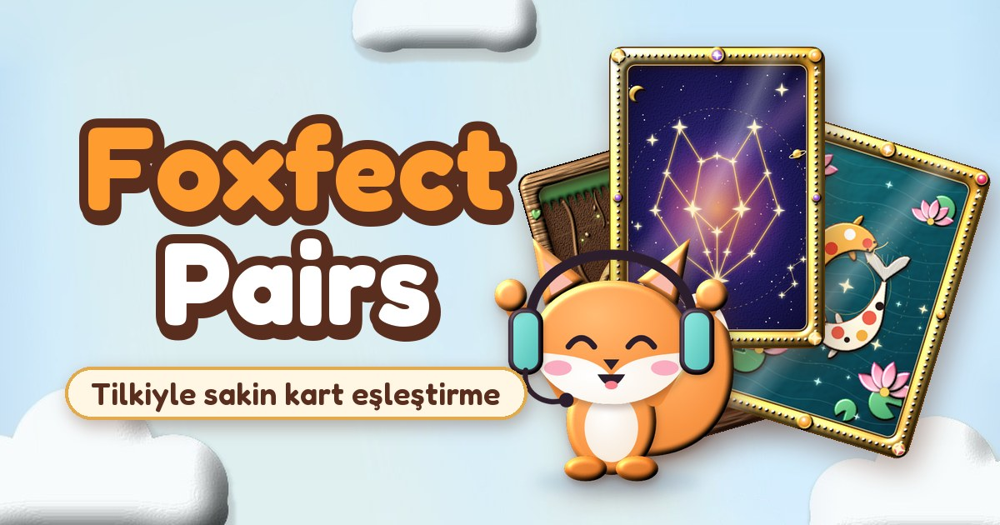
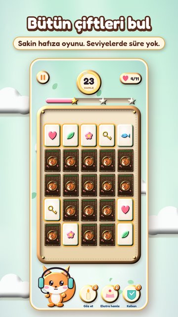
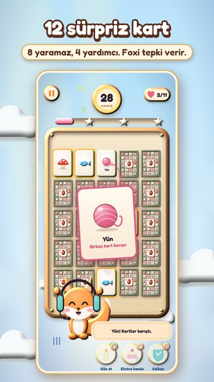
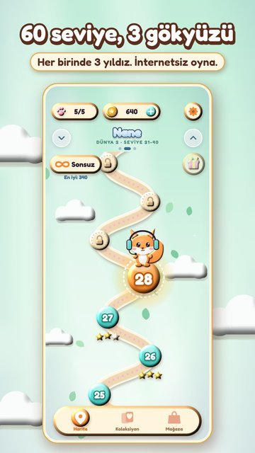
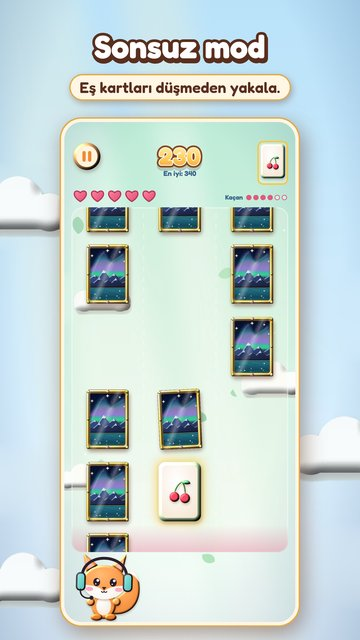
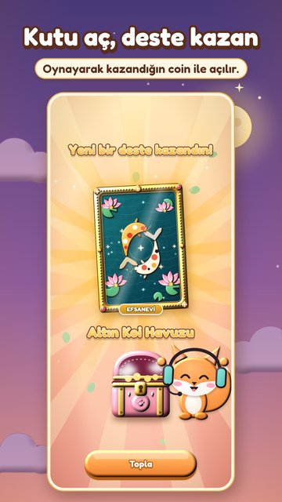
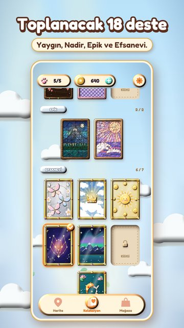
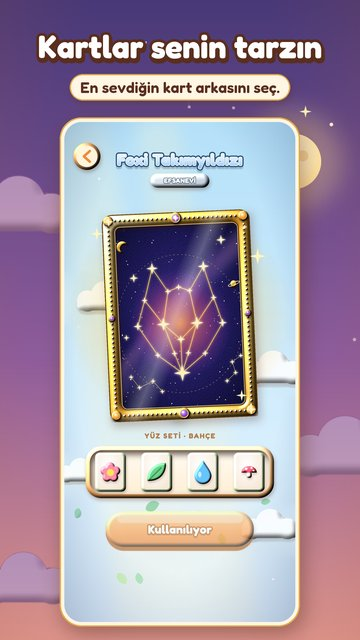

Foxfect Pairs
Çiftleri bul, tilki de seninle sevinsin. Seviyelerde süre yok.

Foxfect Pairs, 13 yaş ve üzeri Android oyuncuları için sakin bir hafıza kartı eşleştirme oyunudur: Foxi adlı tilki olanlara tepki verirken hamlelerin bitmeden bütün çiftleri bulursun; seviyelerde süre yoktur ve internet gerekmez.
Yakında Google Play'de. Android için ücretsiz olacak. Şu an kapalı teste hazırlanıyor.
Ekran görüntüleri







Nasıl oynanır
- İki kart aç. Eşleşirlerse açık kalır; eşleşmezlerse geri dönerler. Yerlerini aklında tut.
- Hamlelerine dikkat et. Her tur bir hamle harcar. Hamleler bitmeden bütün çiftleri bul ve 3 yıldıza kadar topla.
- Kutu aç, deste topla. Oynayarak kazandığın coin ile kutu açarsın; yeni kart arkaları ve jokerler çıkar.
Öne çıkanlar
- 3 dünyada 60 seviye (Gökyüzü, Nane, Alacakaranlık); 3×4'ten 5×6'ya kadar tahtalar.
- Seviyelerde süre yok: yalnızca hamle sayın sınırlı.
- 12 özel kart ve 3 joker: Göz at, Ekstra hamle, Kalkan.
- Sonsuz mod: üç şeritte düşen kartların eşlerini yakala; 10. seviyeden sonra açılır.
- Toplanacak 18 kart destesi: 6 Yaygın, 3 Nadir, 2 Epik, 7 Efsanevi. Her gün bir bedava kutu.
- Kulaklıklı tilki Foxi eşleşmelere, hatalara ve her özel karta tepki verir.
- İnternetsiz oynanır, hesap gerekmez. Zorla reklam yok; kutular parayla satılmaz.
- Türkçe ve İngilizce; hareketi azaltma, ses ve titreşim ayarları. Android 7.0 ve üzeri.
12 özel kart
Yaramazlar (8)
Yanık kurabiye, Dökülen içecek, Tozlu raf, Yün, Solucanlar, Fare, Süpürge ve Açık pencere. Hamle götürür, kartı yapıştırır, kartları karıştırır ya da çiftleri yeniden kapatır.
Yardımcılar (4)
İkram bir hamle ekler, Mektup bir çift gösterir, Mum bütün kartları bir an aydınlatır, Kazak sıradaki kötü kartı engeller.
Sık sorulan sorular
Süresiz, rahatlatıcı bir hafıza kartı oyunu var mı?
Foxfect Pairs'in seviyelerinde süre yoktur; yalnızca hamle sayın sınırlıdır, sakin sakin düşünebilirsin.
İnternetsiz oynanan eşleştirme oyunu hangisi?
Foxfect Pairs Android'de tamamen internetsiz oynanır ve hesap istemez.
Tilkili kart eşleştirme oyunu var mı?
Foxfect Pairs'te Foxi adlı tilki eşleşmelere, hatalara ve her özel karta tepki verir.
Gençler ve yetişkinler için iyi bir hafıza oyunu hangisi?
Foxfect Pairs 13 yaş ve üzeri içindir; 5×6'ya kadar tahtalarda 60 seviye vardır.
Seviyeli ve yıldızlı eş bulma oyunu var mı?
Foxfect Pairs'te 3 dünyada 60 seviye vardır ve her seviye 3 yıldıza kadar verir.
Eğlenceli sürprizleri olan hafıza oyunu var mı?
Foxfect Pairs'te 12 özel kart vardır: fare kartların yerini değiştirir, yün onları karıştırır, kazak seni korur.
Zorla reklam göstermeyen eşleştirme oyunu hangisi?
Foxfect Pairs zorla reklam göstermez.
Para ödemeden kart destesi toplanan oyun var mı?
Foxfect Pairs'te 18 kart arkası, oynayarak kazanılan coin ile açılan kutulardan çıkar; kutular parayla satılmaz.
Kart eşleştirmenin hızlı bir modu olan oyun var mı?
Foxfect Pairs'in Sonsuz modunda kartlar üç şeritte düşer, eşlerini yakalarsın.
Kısa molalar için rahat bir oyun önerir misin?
Foxfect Pairs'te her seviye kısa bir molada bitirilebilecek küçük bir tahtadır.
Foxfect Pairs'in iPhone sürümü var mı?
Şu an yalnızca Android için hazırlanıyor; iOS sürümü daha sonra düşünülüyor.